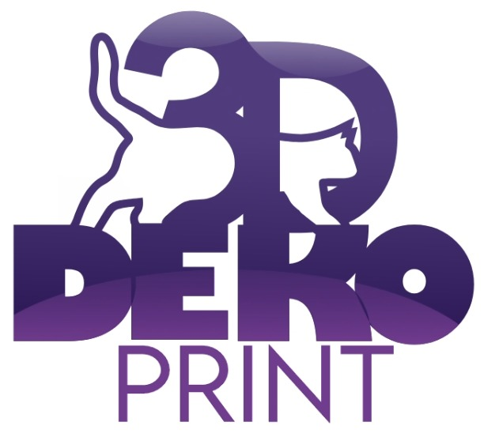
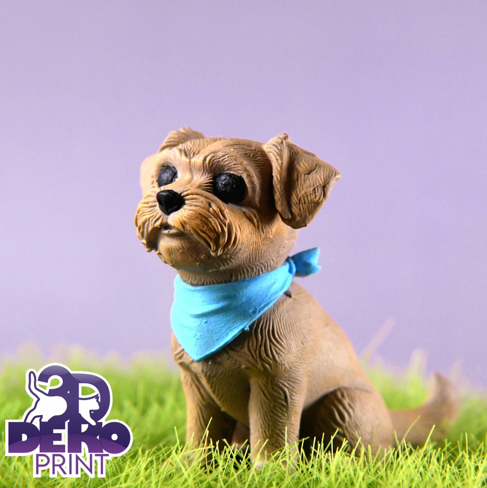

Personalización
Diseños únicos adaptados a tus gustos y necesidades.

DEKO PRINTCreatividad e impresión 3D
En DEKO PRINT transformamos ideas en piezas únicas mediante impresión 3D. Creamos figuras, decoraciones y objetos personalizados.
Conocer más
Diseños únicos adaptados a tus gustos y necesidades.
Convertimos modelos digitales en objetos que puedes utilizar o regalar.
Desde figuras decorativas hasta piezas y prototipos funcionales.
Descubre cómo funciona esta tecnología y todo lo que se puede crear con ella.
¿Qué es la impresión 3D? ↗